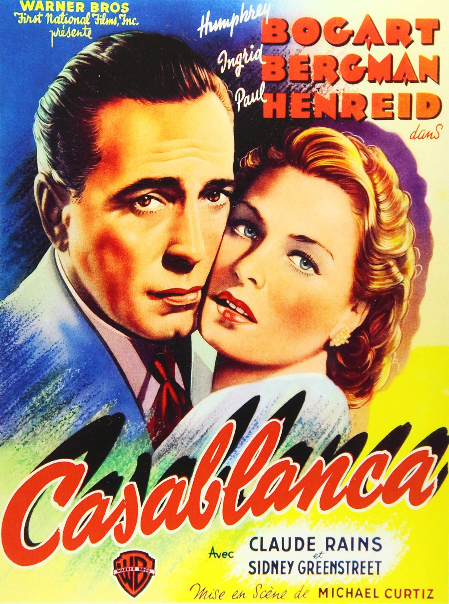

Øst for Paradis er stolt af igen at kunne vise Casablanca! Kom ind og oplev Humphrey Bogart og Ingrid Bergmans ikoniske roller i denne tidsløse klassiker.
Casablanca foregår under anden verdenskrig i Marokko, hvor flygtninge der venter på vissum til USA bruger deres tid på baren Rick's. Bogart spiller ejeren Rick Blaine, hvis verden
bliver væltet på hovedet da hans gamle flamme Ilsa(Bergman) pludselig kommer forbi baren med sin nye mand, må Rick se fortiden i øjnene.